Édition anniversaireMercredi 11 novembre 2026Prix : un sourire
Les nouvelles extraordinaires d’une famille tout à fait remarquable
Le grand concours des tatasHélène × CindyLe duel familial · Bulletin en page 2Candidate n° 1Hélène ouvre la première manche.Candidate n° 2Cindy lui donne la réplique.Bulletin familialLe jury a un an : il se réserve le droit de ne pas trancher.
ExclusifUn événement attendu dans toute la famille
ABEL A UN AN !
Né le 11 novembre 2025, le jeune sorcier souffle sa première bougie. Sa famille confirme : son sourire fait déjà des merveilles.
Portrait du jour
Un an de magie ordinaire
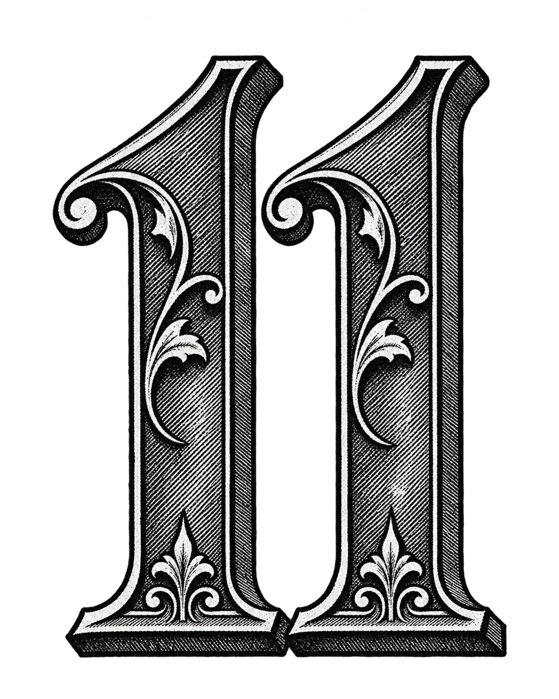
Abel est né le 11 novembre 2025 et, du même coup, Élie est devenu grand frère : une promotion sans décret qui change toute une maison. Le benjamin annonce déjà sa présence d’une voix qui porte ; ses yeux bleus ouvrent une enquête que la Gazette n’ose clore. Damien et Yvonne, son arrière-arrière-grand-mère paternelle, y ont laissé leur éclat ; Nathalie, dite Manie, sa grand-mère maternelle, en offre l’écho. Parfois, la nouvelle la plus importante tient au coin d’une bouche : Abel sourit, et la Gazette oublie ses questions.
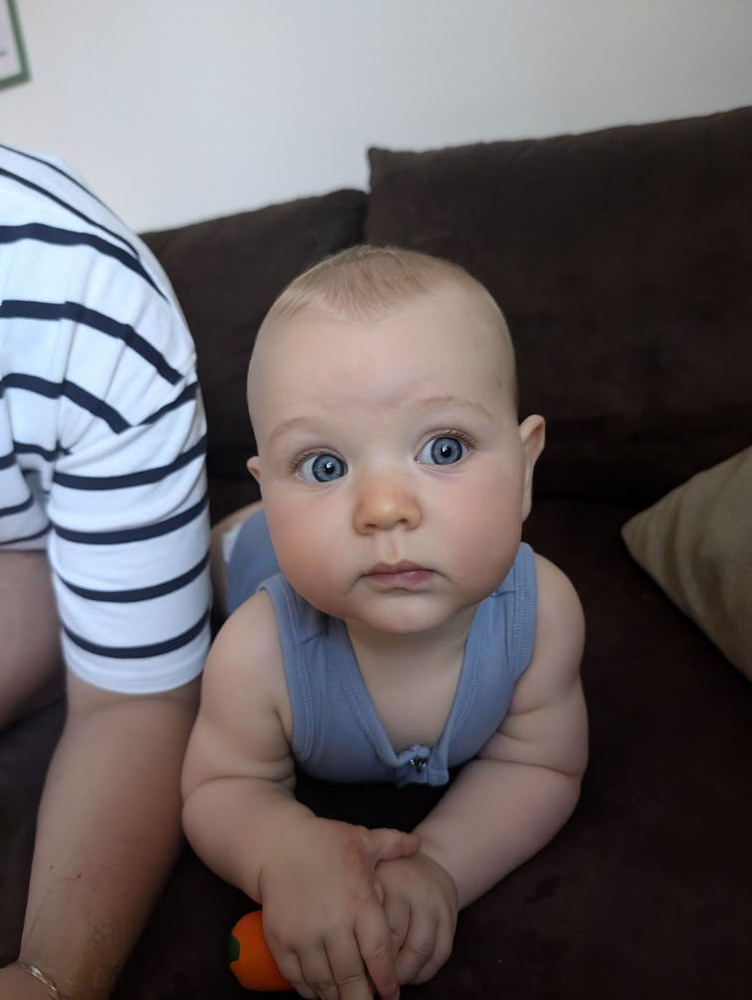
Abel, juillet 2026. La Gazette a retrouvé le propriétaire de ces yeux bleus.Portrait exclusif
Le clan des quatre
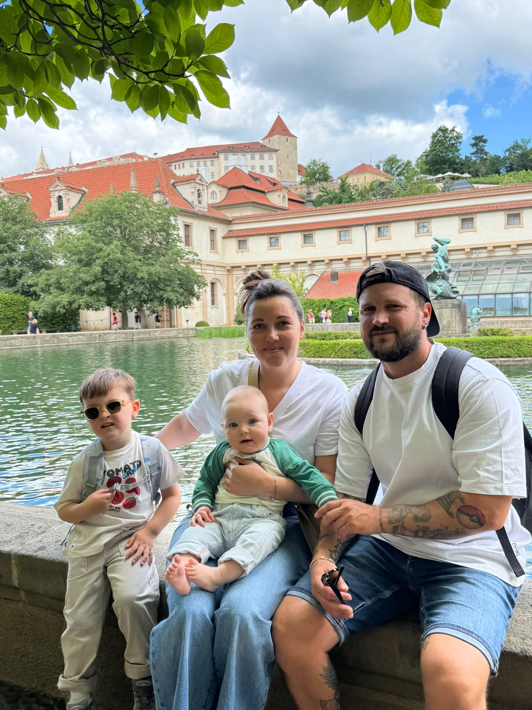
Élie, Marine, Abel et Damien réunis au bord de l’eau.
Sur ce cliché de famille, Marine tient Abel entre Élie et Damien. La première année du benjamin s’écrit déjà à plusieurs voix.
Lire notre grand reportage en page 2.
Un sourire,et toute la maison s’illumine.
Le regard bleu
Le bleu des yeux d’Abel a mis la rédaction sur deux pistes. Du côté de Damien, il rappelle le regard d’Yvonne, son arrière-arrière-grand-mère ; du côté de Marine, celui de Nathalie, dite Manie. Deux branches, un même éclat : le dossier se poursuit en page 4.
La voix porte
Abel n’a pas encore livré son premier discours, mais sa voix porte déjà. La Gazette tend l’oreille, puis voit apparaître son sourire facile : deux façons bien à lui d’annoncer sa présence. Le vocabulaire viendra ; l’essentiel est déjà compris.
Un premier anniversaire
Le 11 novembre 2026, Abel fête sa première année. Marine et Damien voient grandir deux garçons, et Élie exerce depuis un an sa fonction de grand frère. Treize pages célèbrent cette première bougie ; la Gazette ouvre déjà les archives de l’an deux.
Photo de l’année
Abel avec un livre.
Une piste londonienne
Londres, premier indice
Avant l’arrivée d’Abel, Marine et Damien ont suivi une piste jusqu’à Londres : les studios Harry Potter. Aucun cliché de cette escapade n’a rejoint nos archives. Faut-il y chercher le premier indice de cette histoire ? La Gazette laisse aux parents le soin de répondre.
Les dates du dossier
Cinq dates sous la loupe
11 nov. 2025 · Abel fait son entrée.
Février 2026 · les quatre dans le cadre.
Mai 2026 · sourire au bord de la mer.
Juillet 2026 · les yeux bleus livrent leur indice.
11 nov. 2026 · première bougie, dossier ouvert.
Dans ce numéro
À suivre
2 Le clan d’Abel
3 Tristan recherché
4 Le mystère des yeux bleus
5 La tapisserie d’Abel
6–7 Chroniques et cousinade
8–9 Charlotte et Tristan avec Abel
10 La cérémonie du Choixpeau
11 Le premier cercle
12–13 Carte et crédits
Notre service du courrier veille sur cette édition.
Affaires familiales 11 novembre 2026 · Page 2
Grand reportage · Généalogie et liens choisis
Le clan d’Abel
Parents, frère, parrain, marraine, oncles, tatas et cousin : notre guide pour ne confondre personne sur les photographies de famille.
Le premier cercle
Marine, Damien, Élie, Abel
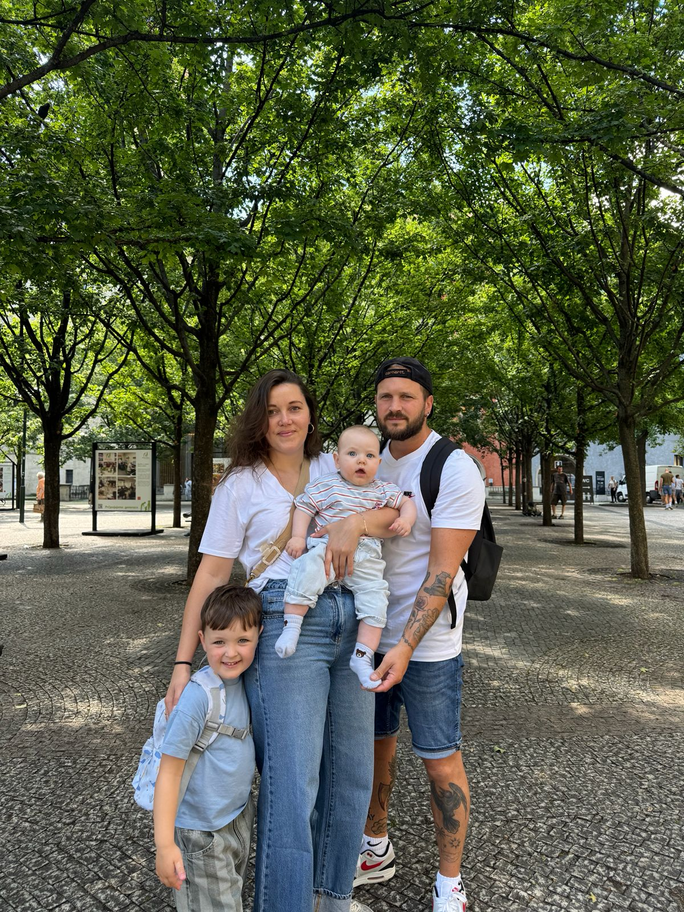
Les quatre réunis sous les arbres.
Marine porte Abel sous les arbres ; Damien et Élie se tiennent près d’eux. Sur ce portrait à quatre, le nouveau rôle du grand frère saute aux yeux sans insigne ni proclamation.
Le trio autour d’Abel
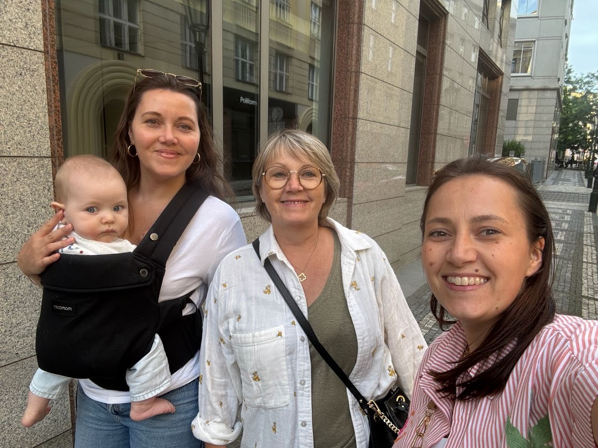
Marine et Abel, avec Nathalie et Hélène.
Marine porte Abel ; sa mère Nathalie et sa sœur Hélène les accompagnent dans le cadre. Le cliché ne raconte qu’une sortie. La présence de ces trois femmes auprès d’Abel, elle, se mesure au quotidien : maman, Manie et tata forment une garde rapprochée que même la Gazette hésite à qualifier de magique.
Liens choisis
Deux alliés d’Abel
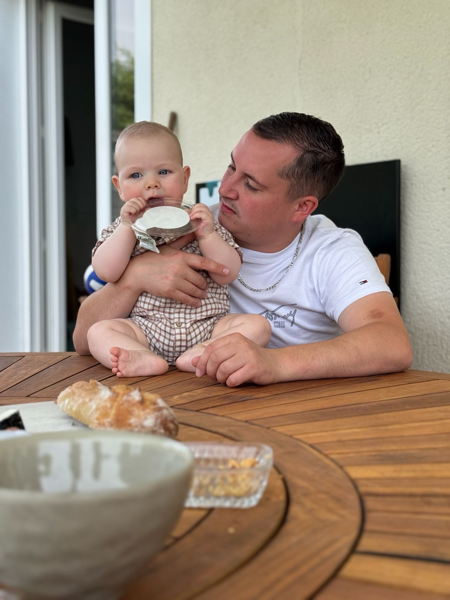
Abel avec son parrain Tristan, à table.
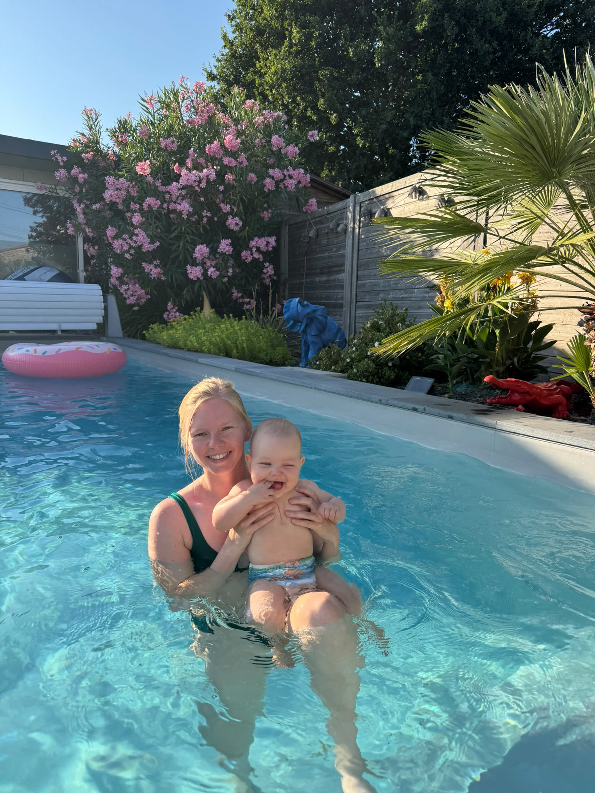
Abel avec sa marraine Charlotte, dans la piscine.
À table, Tristan tient Abel tandis que son filleul examine un petit couvercle. À la piscine, Charlotte le serre dans ses bras. Le parrain et la marraine n’occupent pas la même scène, mais la Gazette les réunit pour une raison simple : chacun a sa place auprès d’Abel.
Le conte des trois frères
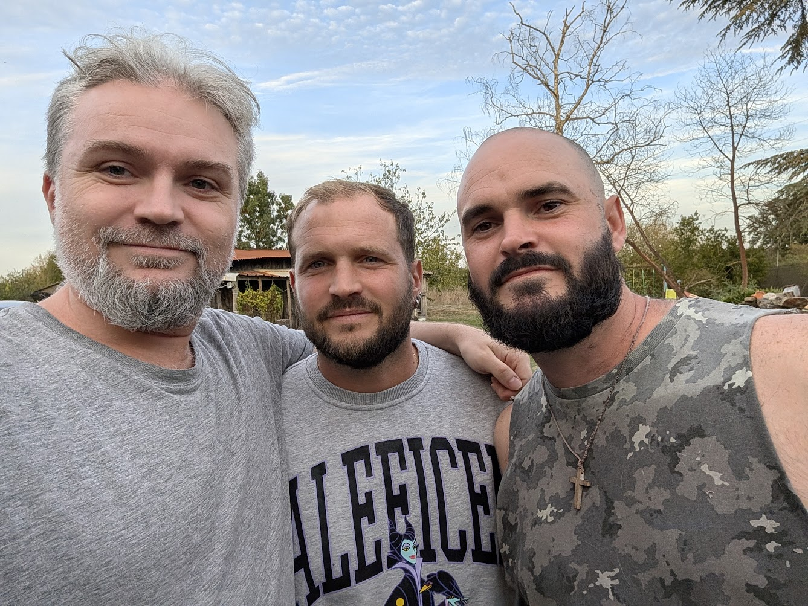
Yoann, Damien et Julien, septembre 2026.
Un conte a déjà parlé de trois frères et de trois reliques. Ici, sur le cliché de septembre 2026, Yoann, Damien et Julien sont réunis sans objet magique à départager. Damien est le père d’Abel ; Julien, celui de Justin, cousin d’Abel et d’Élie ; Yoann est leur frère et le parrain d’Élie. Trois noms, une même branche.
Les tatas entrent en scène
Hélène, sœur de Marine et marraine d’Élie, représente la branche maternelle. Cindy, conjointe de Julien et mère de Justin, vient du côté de Damien ; son portrait rejoint celui d’Hélène dans l’affiche ci-dessous. La Gazette leur tend un titre que seul Abel pourrait décerner — s’il voulait trancher.
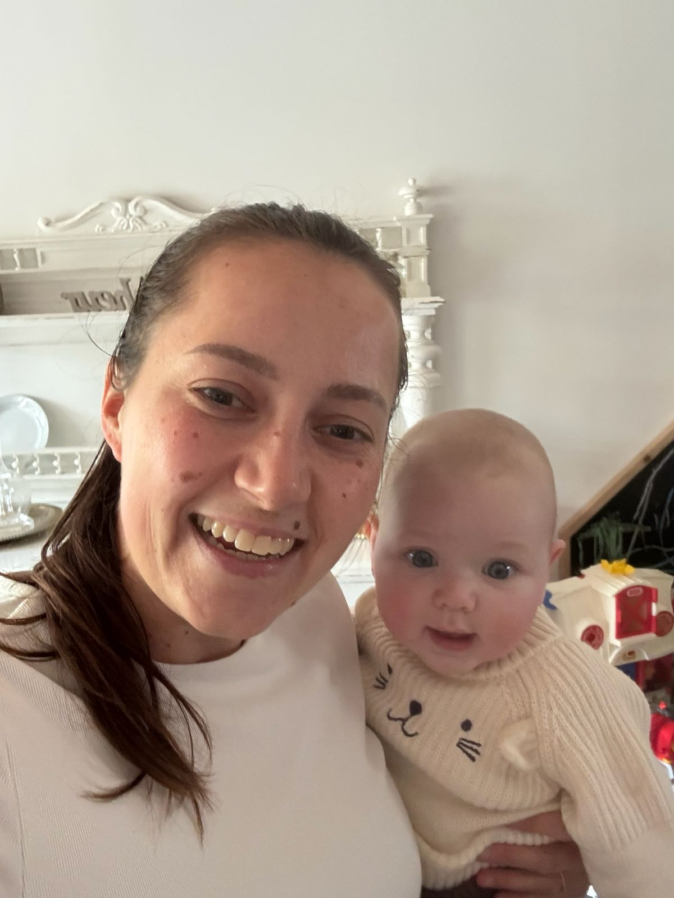
Hélène
Grand combat des tatas · Édition anniversaireLa tata préf’ d’Abel ?VSÀ cocher pour rire : Abel garde ses deux tatas.
Cindy
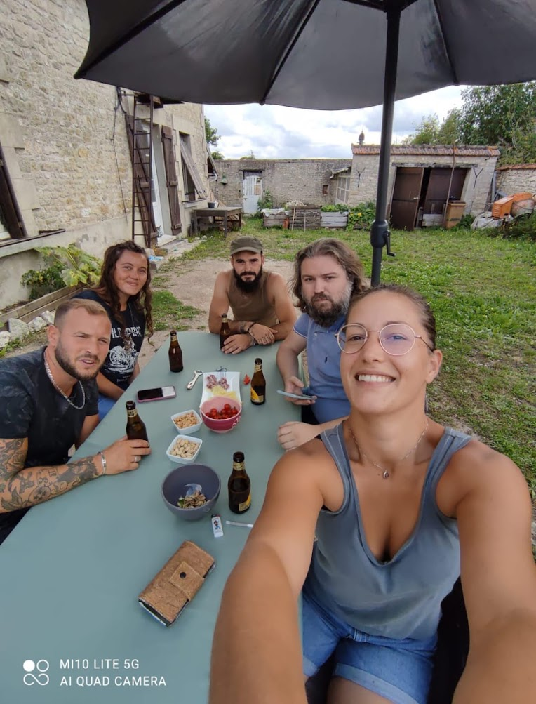
The Daily Prophet · Avis officiel · Édition familiale
Avez-vous vuce sorcier ?
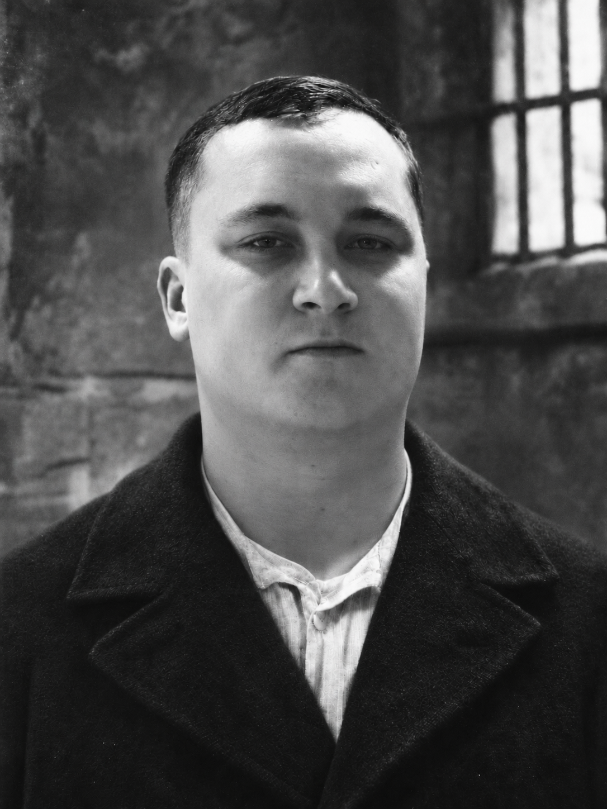
TristanParrain d’Abel · Dossier n° 0111
Approchez avec une extrême prudence !
Avis fictif : ce portrait voudrait faire passer Tristan pour un sorcier redoutable. Rectificatif familial : il est en réalité doux et gentil, et veille sur son filleul Abel. Récompense : un sourire d’Abel pour qui retrouvera son parrain.
Enquêtes & phénomènes 11 novembre 2026 · Page 4
Enquête spéciale · Deux pistes de famille
Le mystère des yeux bleus
Chez Abel, un regard fait remonter les noms de deux branches familiales.
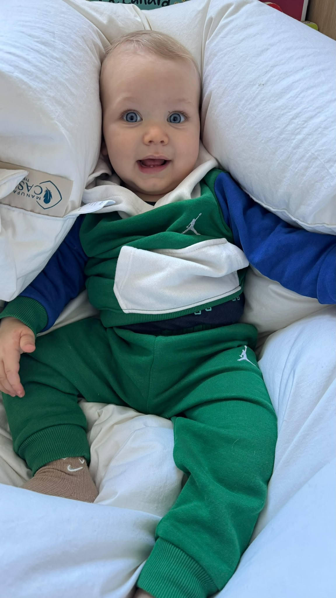
Abel souriant entre deux coussins : ses yeux bleus au cœur du dossier.Dossier n° 001
Le regard qui traverse les générations
Sur le gros plan, Abel sourit entre deux coussins. La rédaction a pourtant commencé par ses yeux : ce bleu se retrouve chez Damien, son père, puis chez Yvonne, son arrière-arrière-grand-mère paternelle. Sur l’autre branche, Nathalie, dite Manie, a le même regard. Plus haut encore, Paulette, la grand-mère maternelle de Nathalie, avait elle aussi les yeux bleus. L’album ouvre ainsi deux pistes et bien plus d’un portrait à examiner.
Il serait tentant de relier les points d’un trait d’encre. Mais Régine et Thierry ont les yeux noisette, Marine les yeux verts : les générations ne recopient pas leurs regards à l’identique. La Gazette s’en tient aux visages et aux liens que la famille connaît ; la tapisserie de la page 5 permet de suivre chaque branche.
Deux branches, un même éclat bleu
Piste paternelle
D’Yvonne à Damien
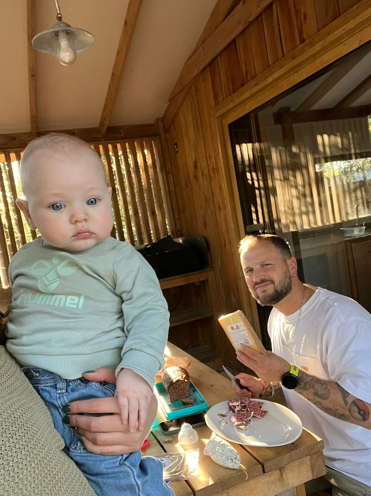
Damien et Abel : le bleu des yeux réunit le père et le fils.
Yvonne · Régine · Thierry · Damien · Abel
Damien tient une tranche de fromage, Abel apparaît près de lui : la Gazette cherchait une piste dans les vieux portraits, elle la trouve au milieu d’une scène de table. Un éclat dans le regard du père rappelle celui d’Yvonne, mère de Régine ; chez le petit dernier, il semble reprendre vie. Entre eux, Régine puis Thierry ont leurs traits à eux. Rien, dans cette famille, ne se répète comme un motif imprimé à l’identique. La tapisserie relie les générations d’un fil continu ; la photographie saisit autre chose, plus fugitif : cet air de famille qui se glisse dans un instant ordinaire, sans demander la permission aux archives.
Piste maternelle
Manie, Marine et Abel
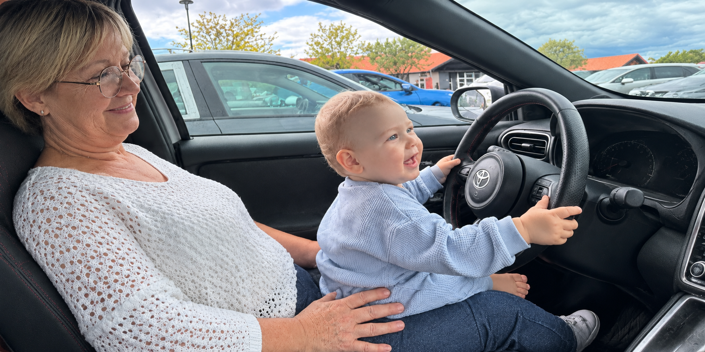
Manie et Abel autour du volant : une première leçon de conduite, selon la famille.
Nathalie · Marine · Abel
Abel tient le volant ; Manie veille à ses côtés. La famille a baptisé la scène sa « première leçon de conduite ». La photo en garde l’essentiel : l’élan du petit pilote, la présence tranquille de sa grand-mère. Plus loin dans l’album, le visage de Paulette, grand-mère de Manie, prolonge cette histoire de regards. Marine en est le trait d’union, avec sa propre lumière. Dans l’habitacle, un éclat bleu affleure chez Manie et Abel, presque en passant. La route peut attendre : ce moment-là mérite déjà sa place dans les archives.
Le mot de la rédaction
L’album reste ouvert
Les yeux ont ouvert l’enquête ; les photos l’ont menée ailleurs. Damien et Abel partagent une table. Manie accompagne un petit pilote à l’arrêt. Plus loin dans l’album, les portraits d’Yvonne et de Paulette remontent le fil du temps. Une nuance revient, discrète, au milieu des visages et des scènes de famille. La tapisserie de la page 5 déroule les liens entre ces noms. L’encre peut refermer le dossier ; l’album, lui, reste ouvert.
Archives familialesLe registre des liens11 novembre 2026 · page 5
Une famille, plusieurs branches, un même petit sorcier
La tapisserie d’Abel
Une histoire de générations, de frères, de sœurs et de cousins — d’après les liens confirmés par la famille.
Chroniques & correspondance 11 novembre 2026 · Page 6
Carnet de voyage · Petits exploits · Prévisions
Le monde s’ouvre à Abel
Un rivage, une chauve-souris d’Halloween, quatre cousins sur un filet : les archives d’Abel ne tiennent déjà plus dans une seule boîte.
Photo mouvante : Marine et Abel au bord de la mer, mai 2026.Chronique du rivage
Un sourire au grand large
En mai 2026, la mer occupe tout l’horizon. Elle ne parvient pourtant pas à voler la vedette. Marine tient Abel et le regarde ; d’un cliché à l’autre, le sourire du petit garçon s’élargit jusqu’au rire. La rédaction n’a trouvé aucun décret pour pareil événement. Elle l’inscrit donc dans ses archives.
On pourrait classer ces images au rayon « promenade à la plage ». Ce serait manquer le sujet. Derrière eux, les vagues avancent ; au premier plan, Marine reste presque immobile, ses bras autour d’Abel. Lui bouge à peine, mais son visage change la mesure du paysage. À côté de cette immense étendue d’eau, il tient encore dans les bras de sa mère — et prend déjà toute la place dans le cadre.
La mer pour décor, Marine pour repère
Les grandes dates de sa première année figurent ailleurs dans ce journal. Ici, aucun exploit à dater : seulement le regard de Marine posé sur son fils et un rire qui grandit entre deux prises. La Gazette aime les nouvelles retentissantes ; elle sait aussi reconnaître celles qui tiennent dans un sourire. L’album a bien fait de garder les deux images.
Correspondance
Une piste à Londres
Les archives commencent avant la première photo d’Abel : un voyage à Londres, avec une visite des studios Harry Potter. Aucun cliché de cette escapade n’a rejoint la rédaction. Voilà qui laisse aux parents le privilège des détails et à la Gazette une piste délicieusement incomplète.
Sur ce chapitre, même notre chouette n’a pas obtenu de supplément d’information.
Chronique des petits exploits
Le petit cascadeur malgré lui
Halloween : une chauve-souris sur le pull, deux bras levés comme des ailes.
Ces derniers temps, Abel s’essaie aux cascades. Quelques chutes figurent déjà au registre familial ; l’une a dépassé le mètre. Après celle-là, son sourire est vite revenu. À voir son entrain, la Gazette soupçonne qu’il trouve l’aventure à son goût.
Sur la photo d’Halloween, il lève les bras, une chauve-souris sur le pull. On ignore si l’emblème lui donne des idées, mais il sied à ce petit cascadeur : ses ailes restent imaginaires, son goût du mouvement semble, lui, bien réel.
À conserver
La cousinade
Faustine, Justin, Élie et Abel, de gauche à droite.
Sur le filet, Faustine, Justin, Élie et Abel tiennent ensemble dans un seul cadre. Le plus jeune ouvre grand les yeux ; les trois autres ont déjà l’aisance de ceux qui connaissent bien les lieux. Aucun décret n’a été nécessaire pour faire une place à Abel. Le voici dans la bande, prêt pour les futures archives de la cousinade — et peut-être pour quelques gros titres que les adultes préféreraient éviter.
Prévisions très officieuses
La deuxième année
Interrogé sur l’an deux, notre sablier a livré du sable, pas un calendrier. La rédaction se risque pourtant à une prévision : d’autres voix, d’autres découvertes et quelques sourires capables d’interrompre une conversation entière.
Pour les dates, il faudra attendre qu’Abel les choisisse lui-même.
Avis de la rédaction
Joyeux anniversaire, Abel !
Marine, Damien : voici une année saisie en images, en petites nouvelles et en grands éclats de rire. À Abel, nous souhaitons un anniversaire aussi vivant que le monde qu’il découvre.
La Gazette referme cette page. L’album, lui, se laisse déjà une place pour la suite.
The Daily Prophet · Avis très officieux · Édition familiale
Avis de recherche
La bande du filet
Quatre petits bandits. Un filet. Une famille sous le charme.
FaustineJustinÉlieAbel
Méfaits imaginaires : occupation du filet en bande organisée · sourires contagieux · tapage joyeux
Récompense : quatre câlins et un goûter à partager
Si vous les reconnaissez, prévenez leurs proches. Ils sauront quoi faire.
En fuite vers le goûter
Grand reportageÉdition anniversaireDeux portraits
Charlotte & Abel La marraine à la une
Portraits de famille · Édition spéciale
Charlotte, marraine au premier rang
Sous les tours de Beauxbâtons comme sur un canapé au soleil, Charlotte et Abel occupent le centre du cadre.
Charlotte et Abel devant les tours de Beauxbâtons.Charlotte et Abel sur le canapé du jardin.
Dans les jardins
Charlotte et son petit sorcier
Les tours de Beauxbâtons voudraient tenir le premier rôle. Charlotte, en uniforme, porte Abel devant les fontaines ; lui sourit, un doigt près de la bouche. Le château peut attendre son tour.
Le détail qui retient la Gazette n’a rien d’un sortilège : dans les bras de sa marraine, Abel semble parfaitement à sa place. Charlotte sourit aussi, et les grandes façades deviennent décor.
Carnet des proches
Une place au soleil
Changement de décor : sur le canapé du jardin, Charlotte sourit derrière ses lunettes. Abel, appuyé contre elle, pose une main sur sa veste et regarde l’objectif ; un proche apparaît derrière eux.
Ici, aucune tour pour réclamer la vedette. Un coin de soleil et le même duo qui remplit l’image. La Gazette connaît des scènes plus tapageuses ; peu racontent aussi simplement la place d’une marraine.
Deux décors, une même place : Charlotte tout près d’Abel.
Le rectificatifÉdition anniversaireDeux pièces au dossier
Tristan & Abel Le parrain retrouvé
Après l’avis de recherche · Notre enquête
Tristan, le parrain derrière l’affiche
La page 3 lui prêtait le visage d’un fugitif. À table avec Abel, deux instants du même jeu rouvrent le dossier du parrain.
Tristan soutient Abel, qui tient son petit couvercle.Dans l’autre image, Abel garde le couvercle ; Tristan le regarde.
Pièce numéro un
Un suspect qui sourit
Premier cliché : Abel serre un petit couvercle entre ses mains. Tristan le soutient et s’approche de lui, bouche ouverte, pour entrer dans le jeu. Voilà qui complique sérieusement le portrait du dangereux fugitif.
Au-dessus de la table, leurs visages se rapprochent. On cherchait un indice à charge ; on trouve un parrain qui accorde toute son attention à son filleul.
Pièce numéro deux
Le regard du parrain
Le second cliché déplace légèrement l’enquête. Installé contre Tristan, Abel garde sa trouvaille et regarde vers l’objectif. Son parrain le tient et suit le petit du regard.
Ce n’est pas une révélation spectaculaire, et c’est peut-être pour cela qu’elle compte. Pendant qu’Abel s’occupe du couvercle, Tristan reste là, attentif. L’affiche peut garder son théâtre d’ombres ; ces images ont le dernier mot.
Le suspect de papier disparaît ; le parrain reste.
Archives de PoudlardÉdition anniversaire11 novembre 2026 · page 10
Une famille Quatre maisons
La cérémonie du Choixpeau
Cent questions en réserve, quatre à chaque cérémonie. Le Choixpeau change de parcours à chaque fois.
Le Choixpeau examine les choix, jamais les yeux
✧
À qui le tour ?
Sélectionnez un prénom dans le registre. Le Choixpeau proposera une maison à partir des réponses, sans lire dans l’arbre familial.
GryffondorPoufsouffleSerdaigleSerpentard
Le Choixpeau propose
Les traits qui ont pesé
Le dépouillement
Les réponses restent sur cet appareil jusqu’à exportation du registre.Chaque réponse apporte trois traits pondérés · aucun lien avec la couleur des yeux.
Marine et Damien, Élie et Abel : au centre de cette édition, une famille qui s’agrandit et deux frères qui prennent leur place côte à côte.
Marine et Damien, côte à côte devant la fontaine.Le duo des parents
Marine et Damien, au départ de tout
Le portrait les réunit devant la fontaine, serrés l’un contre l’autre. Dans ce dossier, Marine et Damien occupent une place évidente : ils sont les parents d’Élie et d’Abel, les deux garçons autour desquels tourne notre édition.
Le 11 novembre 2025, Abel arrive dans la famille. Élie devient grand frère. Un cliché de février 2026 les rassemble déjà tous les quatre : Marine tient le bébé, Damien est auprès d’Élie.
La Gazette a suivi leurs regards et leurs gestes sur ces images. Il n’en faut pas davantage pour raconter un premier cercle : deux parents, un aîné et le benjamin qui fête aujourd’hui son premier anniversaire.
Deux parents · deux frères · une histoire qui grandit
Marine, Abel, Élie et Damien réunis en février 2026.
Les quatre sur une image
La photographie de février garde un instant précieux : Abel encore nourrisson dans les bras de Marine, Élie souriant près de Damien. Chacun a sa place dans le cadre, sans que personne n’ait besoin de poser seul en héros.
La première année d’Abel s’inscrit ainsi dans une histoire déjà commencée à trois, désormais racontée à quatre.
Élie et Abel assis ensemble dehors ; date de la scène non confirmée.
Élie, le grand frère
Devant les arbustes, Élie est assis derrière Abel et le tient près de lui. L’aîné regarde l’objectif avec un large sourire ; son petit frère sourit lui aussi. Ce portrait à deux donne un visage au nouveau titre gagné par Élie depuis novembre 2025.
Abel grandira avec ce frère à ses côtés. Pour l’heure, la Gazette conserve ce moment partagé et souhaite au benjamin une première bougie entourée des siens.
Marine, Damien, Élie, Abel : quatre visages, et toute une année à garder.
Réclame extraordinaireÉdition anniversaire11 novembre 2026 · page 12
Courrier des inventions Service des voyages
Ne perdez plus le nordEssayez-la aujourd’hui !
La Carte du Maraudeur
Une carte qui connaît les couloirs, les détours… et l’heure du goûter.
✦ La carte trouve toujours un passage ✦
La Carte du Maraudeur
Recalcul magique
Vous changez de destination ? La carte redessine le trajet. Des pas apparaissent sur le parchemin et vous guident jusqu’à l’arrivée. Aucun hibou requis.
Édition famille
Offre du jour
Accès illimité aux détours imaginaires. Une seule condition : ne pas perdre la carte avant le gâteau.
Bureau des archives 11 novembre 2026 · Page 13
Dernière page · Remerciements
Crédits
Merci à Hélène, Thierry et Yoann pour leur collaboration à cette édition consacrée à Abel. Et joyeux premier anniversaire, Abel.